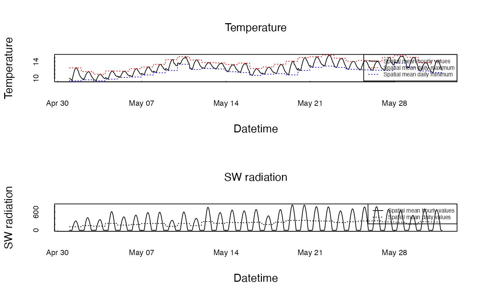
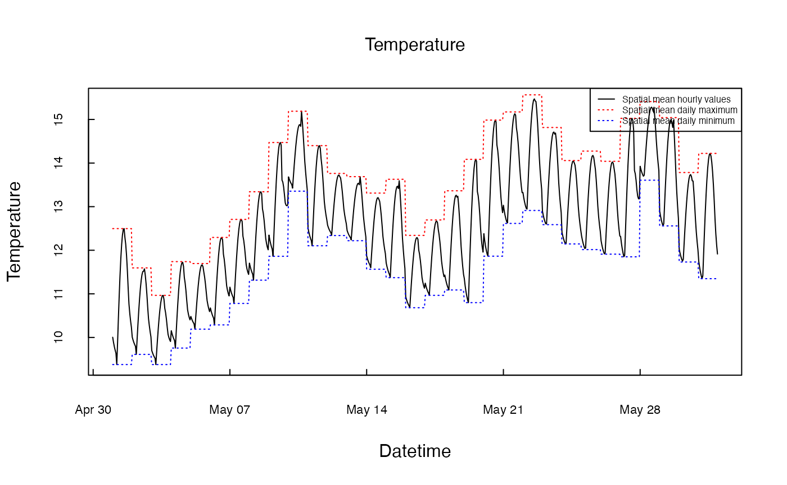
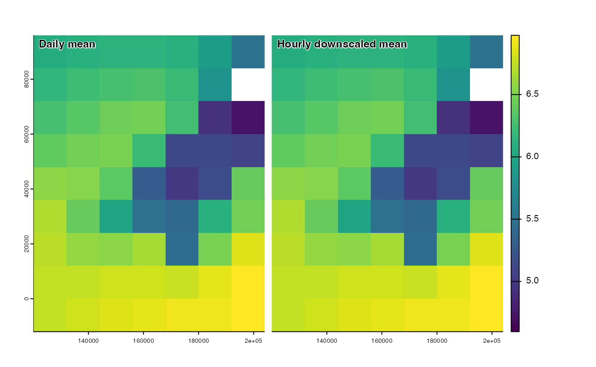

Introduction
When both spatial and temporal dosnccaling is required (for example from UKCP18 data to hourly data at a higher resolution), it is advisable to perform temporal downscaling prior to spatial downscaling. This will help ensure that temporal fluctuation in, for example, windspeed and direction is incorporated into the spatial downscaling of not only these variables but dependent variables such as temperature.
In this example, we use UKCP18RCM outputs for May 2018.
Some plot functions
Some useful functions for plotting hourly (solid lines) and daily (dotted lines) timeseries for a given spatial summary statistic (eg mean).
# Plot hourly timeseries for comparing hourly and daily values for a spatial statistic - takes spatraster inputs
plot_timeseries<-function(hrvar,dymxvar=NA,dymnvar=NA,spstat="mean",vartext="Variable"){
hr_stat<-unlist(global(hrvar, spstat, na.rm=TRUE))
plot_hr<-as.data.frame(cbind(tstep=as.numeric(time(hrvar)),hr_stat=hr_stat ))
plot_hr<-plot_hr[order(plot_hr$tstep),]
matplot(as_datetime(plot_hr$tstep), plot_hr[,2], type = "l", lty = 1,
col = c("black", "red", "blue"), xlab = "Datetime", ylab = vartext, font.main = 1,
tck = 0.02, cex.main=1, cex.axis=0.7, main = vartext, cex.main=1)
if(!inherits(dymxvar,"logical") & !inherits(dymnvar,"logical")){
dy_max<-unlist(global(dymxvar, spstat, na.rm=TRUE))
dy_min<-unlist(global(dymnvar, spstat, na.rm=TRUE))
# Replicate same daily vallues across hourly time step
tstep<- seq(as.POSIXct(time(dymxvar)[1]), time(dymxvar)[nlyr(dymxvar)]+60*60*23, by="hour")
dy_max <- rep(dy_max,each=24)
dy_min <- rep(dy_min,each=24)
plot_dy<-as.data.frame(cbind(tstep=as.numeric(tstep),max=dy_max,min=dy_min))
plot_dy<-plot_dy[order(plot_dy$tstep),]
matplot(as_datetime(plot_dy$tstep), plot_dy[,2:3], type = "l", lty = 3,col = c("red", "blue"),add=TRUE)
legend("topright", legend = c(paste("Spatial",spstat,"hourly values"),
paste("Spatial",spstat,"daily maximum"),
paste("Spatial",spstat,"daily minimum") ),
cex=0.5,col = c("black","red","blue"), lty = c(1,3,3) )
} else if(!inherits(dymxvar,"logical") & inherits(dymnvar,"logical")){ # one daily value
dy_val<-unlist(global(dymxvar, spstat, na.rm=TRUE))
tstep<- seq(as.POSIXct(time(dymxvar)[1]), time(dymxvar)[nlyr(dymxvar)]+60*60*23, by="hour")
dy_val <- rep(dy_val,each=24)
plot_dy<-as.data.frame(cbind(tstep=as.numeric(tstep),dyval=dy_val))
plot_dy<-plot_dy[order(plot_dy$tstep),]
matplot(as_datetime(plot_dy$tstep), plot_dy[,2], type = "l", lty = 3,col = c("black"),add=TRUE)
legend("topright", legend = c(paste("Spatial",spstat,"hourly values"),
paste("Spatial",spstat,"daily values")),
cex=0.5,col = c("black","black"), lty = c(1,3) )
} else{ # no daily values
legend("topright", legend = paste("Spatial",spstat,"hourly values"), cex=0.5,
col = c("black"),lty = 1)
}
}
# Load daily climate data
climdaily<-read_climdata(mesoclim::ukcpinput)
plot(climdaily$dtm)Single step downscaling
As with spatial downscaling temporal downscaling of all daily
variables can be performed by the wrapper fuunction
temporaldownscale. The function assumes tmax
and tmin daily values are available.
allhrly<-temporaldownscale(climdaily, adjust = TRUE, clearsky=NA, srte = 0.09, relmin = 10, noraincut = 0)
par(mfrow=c(2,1))
plot_timeseries(allhrly[["temp"]],dymxvar=climdaily$tmax,dymnvar=climdaily$tmin, spstat="mean", vartext="Temperature")
plot_timeseries(allhrly[["swrad"]],dymxvar=climdaily$swrad,spstat="mean",vartext="SW radiation")
Multi-step downscaling
As with spatial downscaling, the order in which variables are temporaly downscaled is important due to dependencies between the climate variables - for example the downscaling of daily humidity and longwave radiation to hourly requires the prior downscaling of temperature data.
Daily to hourly temperature downscaling
Daytime temperatures are assumed to follow a sine curve with a peak a
short while after solar noon. After dusk, the temperatures are assumed
to decay exponentially reaching a minimum at dawn. The day in which tmax
and tmin fall is assumed to match UTC days. The parameter
stre controls the speed of decay of night time temperatures
with time. A value of zero ensures values drop to minimum at dawn the
following day, but trial and error indicates in most circumstances
temperatures decay faster than this. The default value of 0.09 is an
optimal value derived using ERA5 data for western Europe, but performs
reasonably well globally
# Generate hourly timeseries
hrtemps<-temp_dailytohourly(climdaily$tmin, climdaily$tmax, srte = 0.09)
# Plot spatial averages for hourly and daily data
par(mfrow=c(1,1))
plot_timeseries(hrtemps,climdaily$tmax,climdaily$tmin,spstat="mean",vartext="Temperature")
Atmospheric pressure downscaling
Surface level pressures in kPa downscaled to hourly intervals. TheFunctions provided for converting between atmospheric and sea level pressure.
hrpres<-pres_dailytohourly(pres=climdaily$pres, tme=climdaily$tme, adjust = TRUE)
# Convert to sea level
hrpsl<-atmos_to_sea_pressure(hrpres,climdaily$dtm)
# Plots
plot_timeseries(hrpres,dymxvar=climdaily$pres,spstat="mean",vartext="Atmospheric Pressure")Relative humidity downscaling
Owing to the strong dependence of relative humidity on diurnal temperature patterns, prior to interpolation, relative humidity is first converted to specific humidity using tasmin, tasmax and psl. After interpolation, the data are back-converted to relative humidity, using temph and presh.
CHECK should Function spline interpolate vapour pressure and use temperature cycle???
psl<-atmos_to_sea_pressure(climdaily$pres,climdaily$dtm)
hrrh<-hum_dailytohourly(relhum=climdaily$relhum, tasmin=climdaily$tmin, tasmax=climdaily$tmax, temph=hrtemps, psl=psl, presh=hrpres, tme=climdaily$tme, relmin = 2, adjust = TRUE)
# Plots
plot_timeseries(hrrh,dymxvar=climdaily$relhum,spstat="mean",vartext="Relative humidity")Shortwave radiation downscaling
Converting from daily to hourly downward shortwave radiation values is the most resource demanding of climate variables to downscaleas it requires calculating the hourly and daily clearsky fraction (0:1) of radiation from which hourly clear sky radiation is calculated.
Note: The function assumes input radiation is downward flux, not net radiation (as provided in UKCP).
To get from net to downward flux we need to recognise that rswnet = (1-alb)*radsw, so radsw = rswnet/(1-alb), where alb is white sky albedo - as is carried out in the spatial downsclaing functions. However, white-sky albedo changes as a function of solar angle in a manner dependent on ground reflectance, leaf area, leaf inclination angles and leaf transmittance and the ratio of diffuse and direct radiation. The existing pre-processing of LW radiation data and temporal downscaling functions do NOT account for this hourly variation in albedo.
These discrepancies are probably quite minor expect in areas with very low cover and should be largely captured by applying bias correction functions.
swradhr<-swrad_dailytohourly(radsw=climdaily$swrad, adjust = TRUE)
plot_timeseries(swradhr,dymxvar=climdaily$swrad,spstat="mean",vartext="SW radiation")Downward longwave radiation downscaling
Currently this function recalculates LW down from estimates of LW up from surface temperature and sky emissivity (??!!) before adjusting for daily LW radiation values:
Calculate LW up using air temperature as approximation of surface temperature ie LWup =0.975.6710**-8*(tc+273.15)
Calculates sky emissivity using dewpoint temperature (calculated from Tair, pressure and relative humidity) where skyem = 0.787 + 0.764 * log((tdp+273.15) / 273.15) - from Clark & Allan ref.
Calculates LW down as Lwd = skyem * LWup
If
adjust=TRUE, adjusts daily average of hourly values to reflect those of daily LW input values.
If adjust=FALSE, the LW down inputs have no inluence but
rather outputs will simply reflect temperature and calculated dew point
temperature.
Another option is to downscale from LWnet by simply removing temperture dependent LWup using hourly temps????
lwdhr<-lw_dailytohourly(lw=climdaily$lwrad, hrtemps=hrtemps, hrrh=hrrh, hrpres=hrpres, adjust = TRUE)
plot_timeseries(lwdhr,dymxvar=climdaily$lwrad,spstat="mean",vartext="LW radiation")Wind speed downscaling
For interpolation, u and v wind vectors are derived form wind speed andd direction and these are interpolated to hourly, with backward calculations then performed to derive wind speed and direction.
CHECK Need to spline interpolate u and v wind vectors. We could simulate inter-hourly variability. Follows a Weiball distribution so quite easy I suspect.
hrwind<-wind_dailytohourly(climdaily$windspeed, climdaily$winddir, climdaily$tme, adjust = TRUE)
plot_timeseries(hrwind$wsh,dymxvar=climdaily$windspeed,spstat="mean",vartext="Windspeed")The temporal means across the landscape both before and after hourly downscaling confirms remain the same:
# Variation across landscape maintained after downscaling
r<-c(app(hrwind$wsh,mean,na.rm=TRUE),app(climdaily$windspeed,mean,na.rm=TRUE))
names(r)<-c("Daily mean","Hourly downscaled mean")
panel(r) 